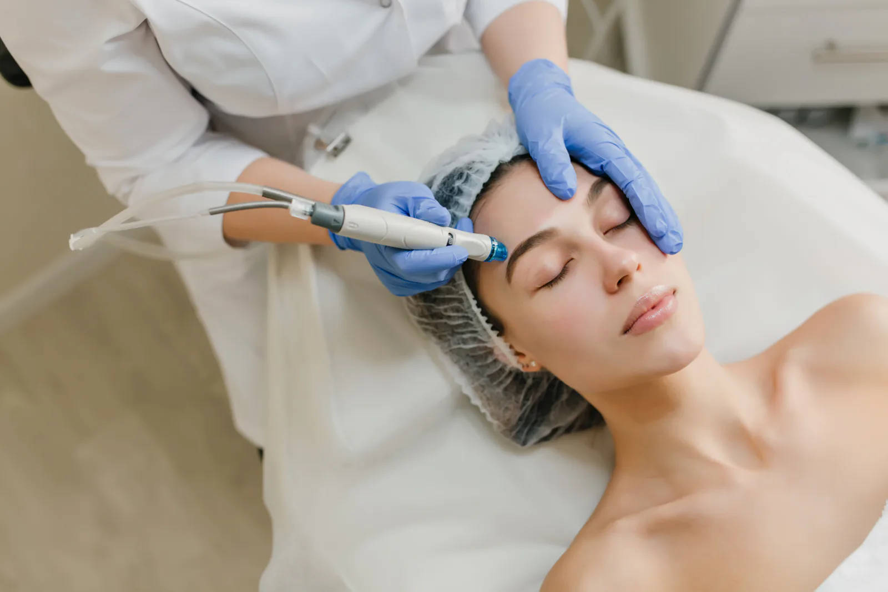
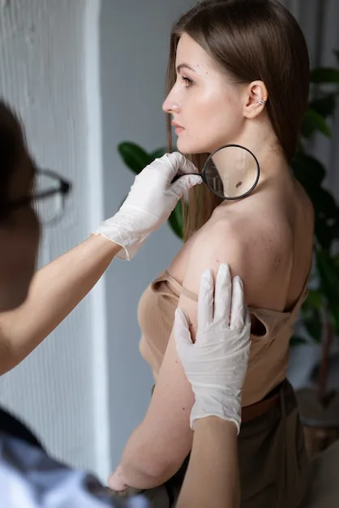
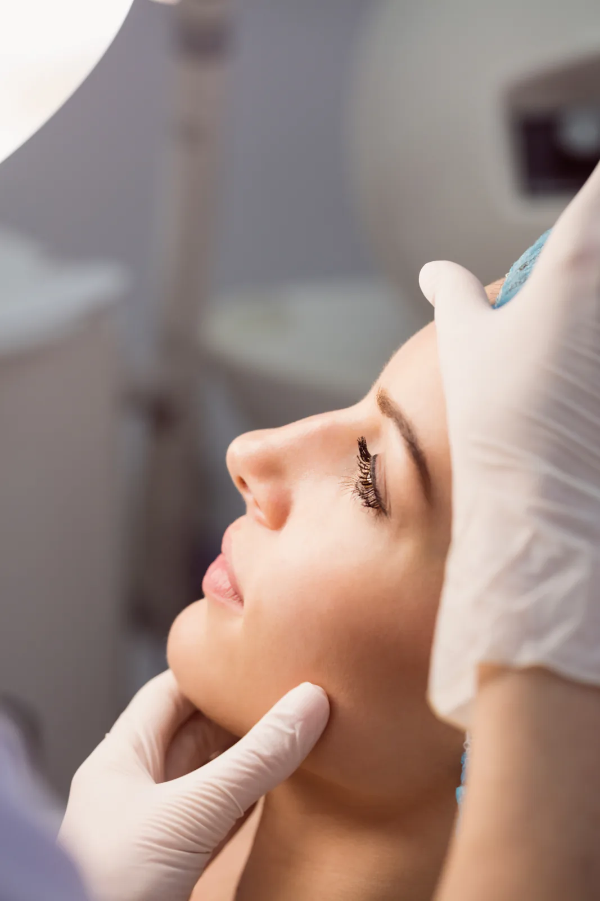
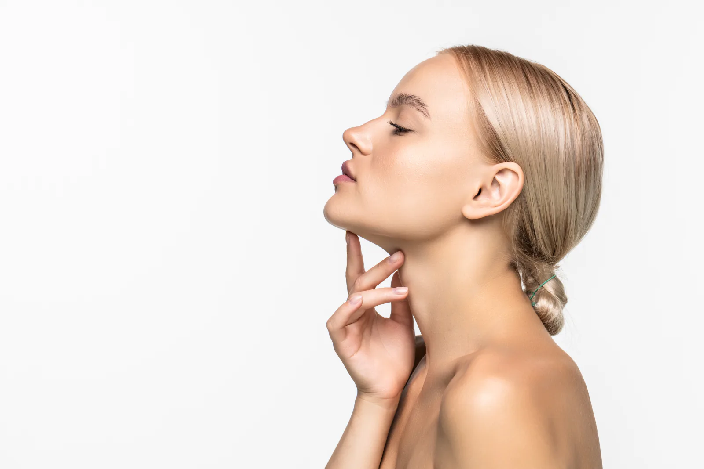

Dermatologia e Tricologia em Curitiba - PR
Dermatologista Tricologista Especialista em Cosmiatria.
Dra. Joane Nathache Hatsbach de Paula
Acredito na medicina realizada com atenção e sensibilidade, no atendimento individualizado e na relação de confiança entre médico e paciente. Procuro conhecer a pessoa por trás da pele.
Uma boa dermatologia mora nos detalhes.
Procedimentos Capilares
Procedimentos Estéticos
Procedimentos Cirúrgicos
QUEM SOU
Joane Nathache Hatsbach de Paula
- Médica formada pela Universidade Federal do Paraná em 2015, com desempenho acadêmico contemplado com a premiação Homero Braga.
- Dermatologista pela Residência Médica do Hospital de Clínicas da Universidade Federal do Paraná (HC-UFPR).
- Título de Especialista em Dermatologia pela Sociedade Brasileira de Dermatologia.
- Especialista em Tricologia (Doenças dos Cabelos e Couro Cabeludo) pelo Hospital Evangélico Mackenzie.
- Especialista em Cosmiatria (Dermatologia Estética e Procedimentos Estéticos) pelo Hospital Evangélico Mackenzie.
- Preceptora dos Serviços Universitários de Residências Médicas em Dermatologia do Hospital Evangélico Mackenzie e do Hospital de Clínicas da UFPR.
- Responsável no ambulatório de Cabelo do Hospital de Clínicas.



Compromisso com a Saúde e Beleza
Meu compromisso é proporcionar a cada paciente um atendimento personalizado, com foco na saúde da pele e no bem-estar.
Dentro da dermatologia, ofereço tratamentos que respeitam sua essência, fundamentados em evidências científicas.
Agende uma consulta
Foco na Saúde Dermatológica
Ofereço uma abordagem integral para a saúde dermatológica, atuando na promoção do cuidado com a pele, na dermatologia preventiva e no tratamento das doenças de pele e couro cabeludo.
Atuo também na área de cosmiatria e procedimentos estéticos, sempre colocando a saúde em primeiro lugar.
Procedimentos Capilares
- MMP de couro cabeludo
- Mesoterapia
Procedimentos Estéticos
- MMP para cicatrizes
- Subincisão de cicatrizes
- Peelings Superficiais e Médios
- Toxina Botulínica
- Preenchimento com Ácido Hialurônico
- Bioestimuladores de Colágeno
- MMP para melasma e rejuvenescimento
- Luz Intensa Pulsada
- Laser Ablativo
- Ultrassom microfocado
- Correção de lóbulo de orelha bipartido
Procedimentos Cirúrgicos
- Biópsia de Pele e Couro Cabeludo
- Pequenas Cirurgias
10 anos de formada
E atualmente responsável pelo ensino de médicos residentes de dermatologia em dois hospitais de referência.
MÉDICA DERMATOLOGISTA
Local
Rua Bom Jesus n° 212
Sala 1709 . 17° Andar
Juvevê . Curitiba . PR
CEP 80035-010